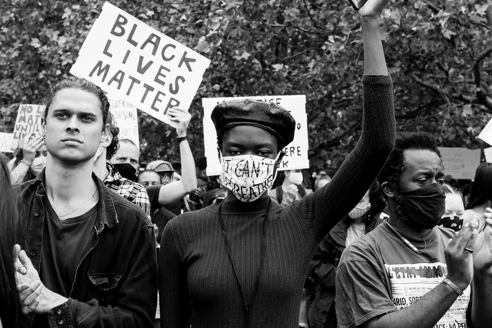

Five Largest Protests in U.S. History

Ongoing Black Lives Matter protests.
The tradition of protests that demand progressive change in the United States continue.
Here are the country's five of the top protests in terms of attendance:
- George Floyd Protests
nationwide in 2020 with an estimated 26 million protesters.
- Women's March
in 2017 drew about 5.6 million people nationwide.
- March for Our Lives,
a student-led protest in 2018 against gun violence, drew about 2 million people.
- Women's March
in 2018 drew about 1.5 million protesters.
- March on Washington for Lesbian, Gay and Bi Equal Rights and Liberation
drew about 1 million people in 1993.